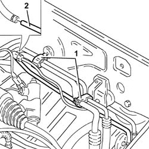
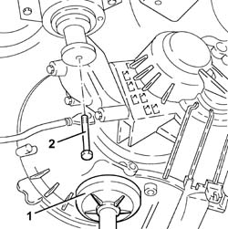
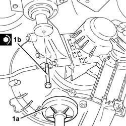

4130B75 return pipe between power steering case and duplex pipes r r for right hand drive versions
- Path
- Procedures > 41 STEERING > 4130 POWER ASSISTED STEERING > 4130B power steering hydraulic sytem > 4130B75 return pipe between power steering case and duplex pipes r r for right hand drive versions
- Kind
- repair procedure (removal / refitting; the operation number is the code)
- Applies to
- engines: 2.5 V6; all production periods
- Interactive page
- https://sloeber94.github.io/elrnDB-a156/en/#/3238166
Applies to: engines: 2.5 V6; all production periods; only with equipment: Right hand drive
 Removing
Removing
 Refitting
RefittingPosition the vehicle on the ramp.
Drain the power steering fluid from the reservoir using a suitable syringe.
5530B52 Battery DRIP TRAY/SUPPORT - R.R.
7055B64 Engine compartment DUST shield in front wheel arch (one), left or right - R.R.
7055B54 under-engine guard - r r
1. Release the air conditioning system pipes from the bands.
Release the power steering fluid return pipes from the collar and panel on the suspension crossmember.
Move the return pipe between power steering box and heat exchanger forward and disconnect from the power steering box side.
2. Disconnect the return pipe between power steering box and heat exchanger on the heat exchanger side.

Applies to: engines: 2.5 V6; all production periods; only with equipment: Right hand drive
1. Position a hydraulic jack under the gearbox.
2. Undo the bolt fixing the gearbox side rigid power unit support to the flexbile block.

Applies to: engines: 2.5 V6; all production periods; only with equipment: Right hand drive
Lower the hydraulic jack as necessary.
Withdraw the return pipe between power steering box and heat exchanger and remove.
Applies to: engines: 2.5 V6; all production periods; only with equipment: Right hand drive
Refitting
RemovingReplace the return pipe between power steering box and heat exchanger.
1. Raise the hydraulic jack (1a) and tighten bolt (1b) securing the power unit gearbox end rigid mount to the flexible block.
 | Fastening | Component | Ø | Value (daNm) |
|---|---|---|---|---|
1b | Bolt | POWER UNIT GEAR BOX END RIGID MOUNT | M10 | (Flexible mounting side) 4.2 ÷ 5.1 |

Applies to: engines: 2.5 V6; all production periods; only with equipment: Right hand drive
Remove the hydraulic jack from under the gearbox.
Connect the return pipe between power steering box and heat exchanger.
Secure the power steering fluid return pipes to the collar and panel on the suspension beam.
Secure the air conditioning system lines to the collars.
7055B54 under-engine guard - r r
7055B64 Engine compartment DUST shield in front wheel arch (one), left or right - R.R.
5530B52 Battery DRIP TRAY/SUPPORT - R.R.
Fill the power steering circuit with the recommended fluid.
 | Type | Component | Name | Qty. |
|---|---|---|---|---|
- | Fluid | POWER ASSISTED STEERING CIRCUIT | TUTELA GI/A | - |
Bleed the power steering system as described below.
With the front wheels raised off the ground, with the engine switched off, carry out 4-5 complete steering wheel rotation cycles (left and right).
Check and, if necessary, top up the fluid level in the reservoir.
Position the vehicle on the ground and start up the engine.
Carry out 4 - 5 complete steering wheel rotations (right and left).
Top up the fluid level in the reservoir.